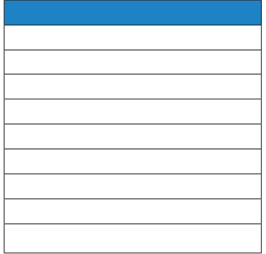
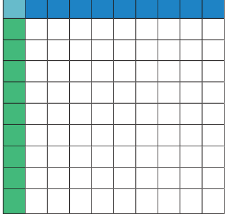
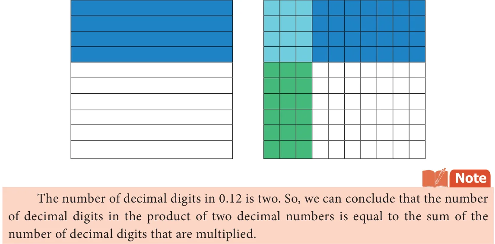
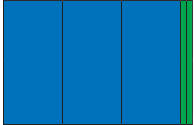
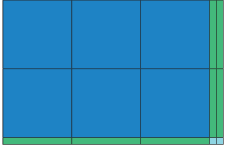
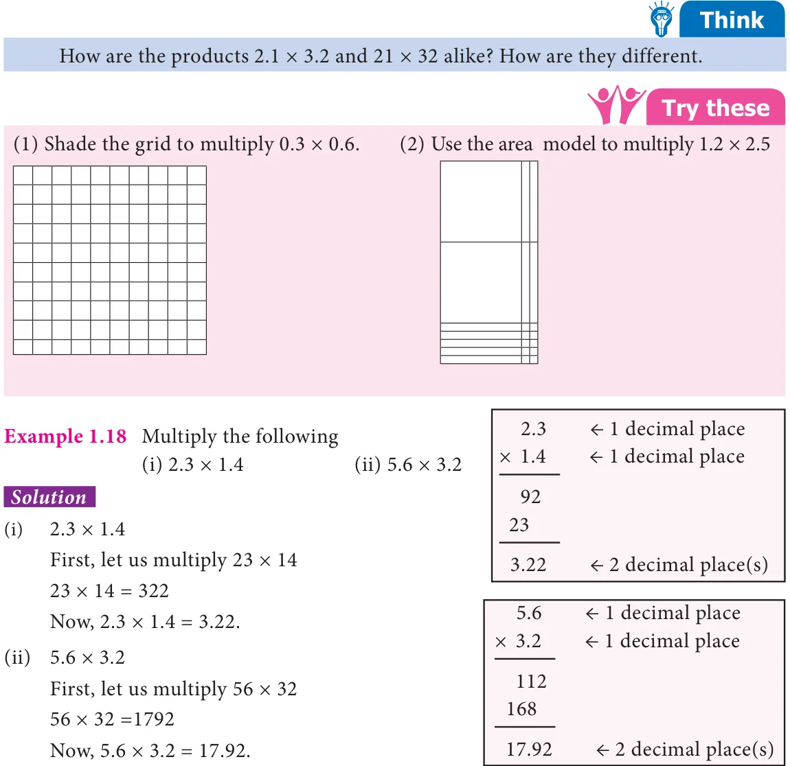
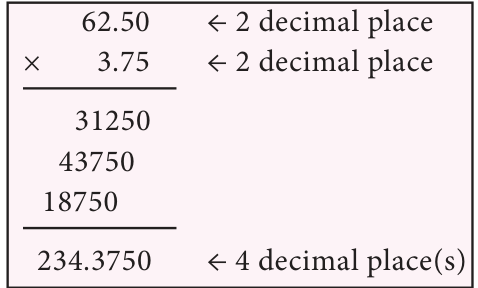
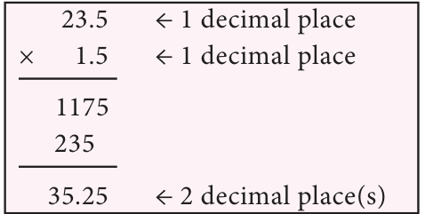
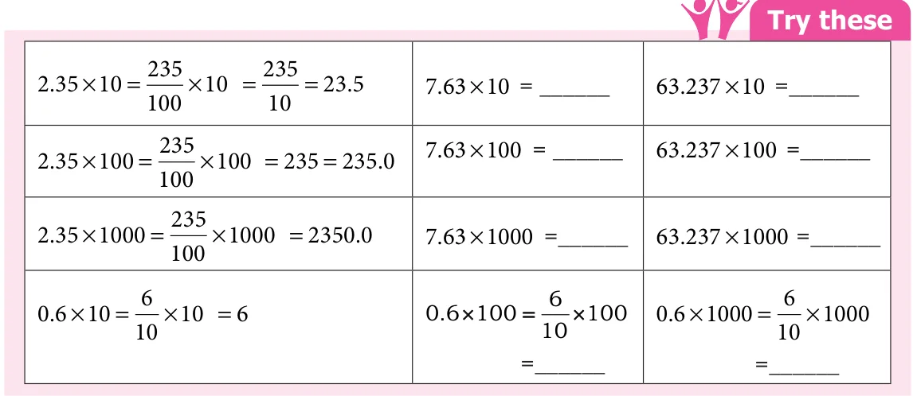
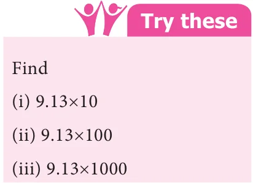

<!DOCTYPE html>
<html lang="en">
<head>
<meta charset="UTF-8">
<meta name="viewport" content="width=device-width,initial-scale=1">
<title>1.3.2 Multiplication of Decimal Numbers — Number System</title>
<meta name="description" content="Class 7 Mathematics · Term 3 · Number System · 1.3.2 Multiplication of Decimal Numbers">
<link rel="icon" href="data:image/svg+xml,<svg xmlns='http://www.w3.org/2000/svg' viewBox='0 0 100 100'><text y='.9em' font-size='90'>📘</text></svg>">
<link rel="stylesheet" href="../../../assets/book.css">
<link rel="stylesheet" href="https://cdn.jsdelivr.net/npm/katex@0.16.11/dist/katex.min.css" crossorigin="anonymous">
</head>
<body>
<header class="topbar">
<div class="topbar-in">
  <div class="crumb">
    <span class="c1"><a href="../../../index.html">Library</a> · <a href="../../index.html">Class 7 Mathematics · Term 3</a></span>
    <span class="c2">Number System · 1.3.2 Multiplication of Decimal Numbers</span>
  </div>
  <a class="tb-btn" data-nav="prev" href="../../01-number-system/05-exercise-1.2/index.html" title="Exercise 1.2">←</a>
  <details class="drawer"><summary class="tb-btn" title="Sections in this chapter">☰</summary>
<div class="drawer-panel"><div class="dh">Number System</div><a href="../01-chapter-opener/index.html">Chapter opener; 1.1 Introduction</a><a href="../02-rounding-of-decimals-1.2/index.html">1.2 Rounding of Decimals</a><a href="../03-exercise-1.1/index.html">Exercise 1.1</a><a href="../04-operations-on-decimal-numbers-1.3/index.html">1.3 Operations on Decimal Numbers</a><a href="../05-exercise-1.2/index.html">Exercise 1.2</a><a href="../06-multiplication-of-decimal-numbers-1.3.2/index.html" aria-current="page">1.3.2 Multiplication of Decimal Numbers</a><a href="../07-exercise-1.3/index.html">Exercise 1.3</a><a href="../08-division-of-decimal-numbers-1.3.3/index.html">1.3.3 Division of Decimal Numbers</a><a href="../09-exercise-1.4/index.html">Exercise 1.4</a><a href="../10-exercise-1.5/index.html">Exercise 1.5</a><a href="../11-summary/index.html">Summary</a><a href="../12-ict-corner/index.html">ICT Corner</a></div></details>
  <a class="tb-btn" data-nav="next" href="../../01-number-system/07-exercise-1.3/index.html" title="Exercise 1.3">→</a>
  <button class="tb-btn" data-theme-toggle title="Toggle light / dark" aria-label="Toggle light or dark theme">◐</button>
</div>
<div class="progress"><span style="width:10.2%"></span></div>
</header>
<main class="wrap">
<div class="sec-head">
  <p class="eyebrow"><a href="../index.html">Chapter 1 · Number System</a></p>
  <h1>1.3.2 Multiplication of Decimal Numbers</h1>
  <p class="sec-meta">Textbook pages 11–16 · 15 figures</p>
</div>
<article class="prose">
<p>Mathan wants to buy a shirt material which costs ₹ 75.50 per metre. He needs 1.5 metre to stitch a shirt. How much does he have to pay? Here we need to multiply 75.50 and 1.5. In real life, there are many situations where we need to multiply decimal numbers.</p>
<ul class="qlist">
<li><span class="mk">(i)</span><span class="lt">Decimal multiplication through models</span></li>
</ul>
<p>Let us try to understand decimal multiplication using grid model. Let us find \(0.1 \times 0.1\). 0 1. \(= \frac{1}{10}\) . Therefore, 0 1. \(\times 0 1\). \(= \frac{11}{1010} \times\)</p>
<p>That is, \(\frac{1}{10}\) of \(\frac{1}{10}\) .</p>
<p>th</p>
<p>\(\frac{1}{10} \frac{1}{10}\) of \(\frac{1}{10} = \frac{1}{100}\)</p>
<aside class="sidenote"><p>th</p></aside>
<figure class="fig table-fig"><figcaption>Fig. 1.7 Fig. 1.8</figcaption></figure>
<figure class="fig"></figure>
<p>Shade horizontally \(\frac{1}{10}\) by blue colour (Fig. 1.7). Shade vertically \(\frac{1}{10}\) by green colour (Fig. 1.8).</p>
<p>\(\frac{1}{10} \frac{1}{10} \frac{1}{100}\)</p>
<p>th th</p>
<p>Then of is the common portion, that is .</p>
<div class="mathblock"><p>Therefore, \(\frac{111}{1010100} \times = = 0 01\). Hence, \(0.1 \times 0.1 = 0.01\).</p></div>
<p>Example 1.16 Find the value of \(0.3 \times 0.4\)</p>
<h4 class="callout-h" id="s-solution">Solution</h4>
<p>First shade 4 rows of the grid in blue colour to represent 0.4. Shade 3 columns of the grid in green colour to represent 0.3 of 0.4. Now 12 squares represents the common portion. This represents 12 hundredth or 0.12. Hence \(0.3 \times 0.4 = 0.12\).</p>
<p>\(\frac{4}{10} \frac{3}{10}\) of \(\frac{4}{10} = \frac{12}{100}\)</p>
<aside class="sidenote"><p>th</p></aside>
<figure class="fig table-fig wide"></figure>
<p>Area model</p>
<p>We have already learnt about the area model in the addition and subtraction of decimal numbers. In the same way we are going to multiply the decimal numbers. Now we shall see an example.</p>
<figure class="fig side-fig"></figure>
<p>Example 1.17 Multiply 3.2 and 2.1</p>
<h4 class="callout-h" id="s-solution">Solution</h4>
<p>Let us try to represent the product of decimal numbers \((3.2 \times 2.1)\) as the area of a rectangle. Let us consider a rectangular portion as shown in Fig. 1.9. Fig. 1.9</p>
<p>The rectangular portion is split into 3 wholes and 2 tenth along it’s length (Fig. 1.10).</p>
<figure class="fig table-fig"><figcaption>Fig. 1.10</figcaption></figure>
<figure class="fig"></figure>
<p>Since, 3 wholes and 2 tenth is multiplied with 2.1, we split the same area into 2 wholes and 1 tenth along its breadth (Fig. 1.11).</p>
<figure class="fig table-fig side-fig"></figure>
<p>Here, each row contains 3 wholes and 2 tenth. Each column contains 2 wholes and 1 tenth. The entire area model represents 6 wholes, 7 tenth and 2 hundredth.</p>
<p>Therfore, \(3.2 \times 2.1 = 6.72\) Fig. 1.11</p>
<figure class="fig table-fig wide"></figure>
<p>Example 1.19 Latha purchased a churidhar material of 3.75 m at the rate of ₹ 62.50 per metre. Find the amount to be paid.</p>
<h4 class="callout-h" id="s-solution">Solution</h4>
<p>Cost of churidhar material = ₹ 62.50 per metre Length of churidhar material \(= 3.75 m\)</p>
<p>Amount to be paid \(= 3.75 \times 62.50\)</p>
<figure class="fig side-fig"></figure>
<div class="mathblock"><p>= ₹ \(234.3750 =\) ₹ 234.38 (rounded</p></div>
<p>to two decimals).</p>
<p>Example 1.20 The length and breadth of a rectangle is 23.5 cm and 1.5 cm respectively. Find the area of the rectangle.</p>
<h4 class="callout-h" id="s-solution">Solution</h4>
<figure class="fig side-fig"></figure>
<p>Area of a rectangle \(= l \times b\) sq. units</p>
<div class="mathblock"><p>Here, l=23.5 cm, b=1.5 cm.</p></div>
<p>Area of the rectangle \(= 23.5 \times 1.5\)</p>
<div class="mathblock"><p>\(= 35.25\) sq.cm.</p></div>
<ul class="qlist">
<li><span class="mk">(ii)</span><span class="lt">Multiplication of Decimal Numbers by 10, 100 and 1000</span></li>
</ul>
<p>We have studied about conversion of decimals into fractions in the first term. Consider 45.6 and 4.56.</p>
<figure class="fig side-fig"></figure>
<p>Expressing these decimal numbers into fractions, we get</p>
<div class="mathblock"><p>45 6. \(=40 + 5+ 6 = 45+ 6 = 456\)</p></div>
<div class="mathblock"><p>Now, 4 56. \(= 4 + \frac{56456}{10100100} + =\)</p></div>
<p>Comparing the two fractions, we see that if there is one digit after the decimal point, then the denominator is 10 and if there are two digits after the decimal point, then the denominator is 100 and so on. Let us see what happens if a decimal number is multiplied by 10, 100 and 1000. Observe the following table and complete it.</p>
<figure class="fig table-fig wide"></figure>
<p>Can you observe any pattern in the above table? There is a pattern in the shift of decimal points of the products in the table. In \(2.35 \times 10 = 23.5\) the digits are the same, that is 2, 3, 5. Observe 2.35 and 23.5. To which side has the decimal point been shifted, right or left? The decimal point is shifted to the right by one place. Also note that 10 is one zero followed by 1. In \(2.35 \times 100 = 235.0\), observe 2.35 and 235. To which side and by how many digits has the decimal point been shifted? The decimal point has been shifted to the right by two places. Note that 100 is two zeros followed by 1.</p>
<figure class="fig side-fig"></figure>
<p>Similarly in \(2.35 \times 1000 = 2350.0\), we see that the decimal point has been shifted to the right by three places by adding one more digit 0 to the number 235. Note that 1000 is three zeros followed by 1.</p>
<p>So we conclude that when a decimal number is multiplied by 10, 100 or 1000, the digits in the product are same as in the decimal number but the decimal point in the product is shifted to the right by as many places as there are zeros followed by 1.</p>
<p>Based on these observations we can now say,</p>
<div class="mathblock"><p>\(0.02 \times 10 = 0.2\); \(0.02 \times 100 = 2\) and \(0.02 \times 1000 = 20\).</p></div>
<p>Can you find the value of following?</p>
<div class="mathblock"><p>\(2.76 \times 10 =\) ? \(2.76 \times 100 =\) ? \(2.76 \times 1000 =\) ?</p></div>
<p>Example 1.21 Find the value of the following</p>
<ul class="qlist">
<li><span class="mk">(i)</span><span class="lt">\(3.26 \times 10\) (ii) \(3.26 \times 100\) (iii) \(3.26 \times 1000\)</span></li>
<li><span class="mk">(iv)</span><span class="lt">\(7.01 \times 10\) (v) \(7.01 \times 100\) (vi) \(7.01 \times 1000\)</span></li>
</ul>
<h4 class="callout-h" id="s-solution">Solution</h4>
<ul class="qlist">
<li><span class="mk">(i)</span><span class="lt">\(3.26 \times 10 = 32.6\) (iv) \(7.01 \times 10 = 70.1\)</span></li>
<li><span class="mk">(ii)</span><span class="lt">\(3.26 \times 100 = 326.0\) (v) \(7.01 \times 100 = 701.0\)</span></li>
<li><span class="mk">(iii)</span><span class="lt">\(3.26 \times 1000 = 3260.0\) (vi) \(7.01 \times 1000 = 7010.0\)</span></li>
</ul>
<p>Example 1.22 A concessional entrance ticket for students to visit a zoo is ₹ 12.50. How much has to be paid for 20 tickets?</p>
<h4 class="callout-h" id="s-solution">Solution</h4>
<p>Cost of one ticket = ₹ 12.50 Amount to be paid for 20 students \(= 12.50 \times 20 =\) ₹ 250.00</p>
<p>We have already discussed about the multiplication of decimal numbers by 10, 100 and 1000. In the same way we can find patterns for multiplying decimal numbers by 0.1, 0.01 and 0.001. Observe the following.</p>
<div class="mathblock"><p>\(12.3 \times 0.1 = \frac{1231}{1010} \times = \frac{123}{100} = 1.23 12.3 \times 0.01 = \frac{1231}{10100} \times = \frac{123}{1000} = 0.123 12.3 \times 0.001 = \frac{1231}{101000} \times = \frac{123}{10000} = 0.0123\)</p></div>
<p>From the above multiplication we can conclude that, when multiplying by</p>
<ul class="qlist">
<li><span class="mk">•</span><span class="lt">0.1, the decimal point moves one place left.</span></li>
<li><span class="mk">•</span><span class="lt">0.01, the decimal point moves two places left.</span></li>
<li><span class="mk">•</span><span class="lt">0.001, the decimal point moves three places left.</span></li>
</ul>
<p>Zeros may be added as required when multiplied by 0.1, 0.01 and 0.001 as mentioned above.</p>
<figure class="fig table-fig wide"></figure>
<figure class="fig wide"></figure>
<ul class="qlist">
<li><span class="mk">1.</span><span class="lt">Find the product of the following</span></li>
<li><span class="mk">(i)</span><span class="lt">\(0.5 \times 3\) (ii) \(3.75 \times 6\) (iii) \(50.2 \times 4\)</span></li>
<li><span class="mk">(iv)</span><span class="lt">\(0.03 \times 9\) (v) \(453.03 \times 7\) (vi) \(4 \times 0.7\)</span></li>
<li><span class="mk">2.</span><span class="lt">Find the area of the parallelogram whose base is 6.8 cm and height is 3.5 cm.</span></li>
<li><span class="mk">3.</span><span class="lt">Find the area of the rectangle whose length is 23.7 cm and breadth is 15.2 cm.</span></li>
<li><span class="mk">4.</span><span class="lt">Multiply the following</span></li>
<li><span class="mk">(i)</span><span class="lt">2 57. \(\times 10\) (ii) 0 51. \(\times 10\) (iii) 125 367. \(\times 100\) (iv) 34 51. \(\times 100\)</span></li>
<li><span class="mk">(v)</span><span class="lt">62 735. \(\times 100\) (vi) 0 7. \(\times 10\) (vii) 0 03. \(\times 100\) (viii) 0 4. \(\times 1000\)</span></li>
<li><span class="mk">5.</span><span class="lt">A wheel of a baby cycle covers 49.7 cm in one rotation. Find the distance covered in</span></li>
</ul>
<p>10 rotations.</p>
<ul class="qlist">
<li><span class="mk">6.</span><span class="lt">A picture chart costs ₹ 1.50. Radha wants to buy 20 charts to make an album.</span></li>
</ul>
<p>How much does she have to pay?</p>
</article>
<nav class="pager"><a class="" data-nav="prev" href="../../01-number-system/05-exercise-1.2/index.html"><span class="dir">← Previous</span><span class="t">Exercise 1.2</span><span class="ch">Number System</span></a><a class="nx" data-nav="next" href="../../01-number-system/07-exercise-1.3/index.html"><span class="dir">Next →</span><span class="t">Exercise 1.3</span><span class="ch">Number System</span></a></nav>
</main><footer class="site">Generated from the source textbook PDFs · text, figures and exercises belong to their respective publishers.</footer><script defer src="https://cdn.jsdelivr.net/npm/katex@0.16.11/dist/katex.min.js" crossorigin="anonymous"></script>
<script defer src="https://cdn.jsdelivr.net/npm/katex@0.16.11/dist/contrib/auto-render.min.js" crossorigin="anonymous"
  onload="renderMathInElement(document.body,{delimiters:[
    {left:'\\(',right:'\\)',display:false},
    {left:'$$',right:'$$',display:true},
    {left:'\\[',right:'\\]',display:true}],throwOnError:false,ignoredTags:['script','noscript','style','textarea','pre','code']})"></script>
<script src="../../../assets/book.js"></script>
<script defer src="../../../../assets/search.js"></script>
</body>
</html>
